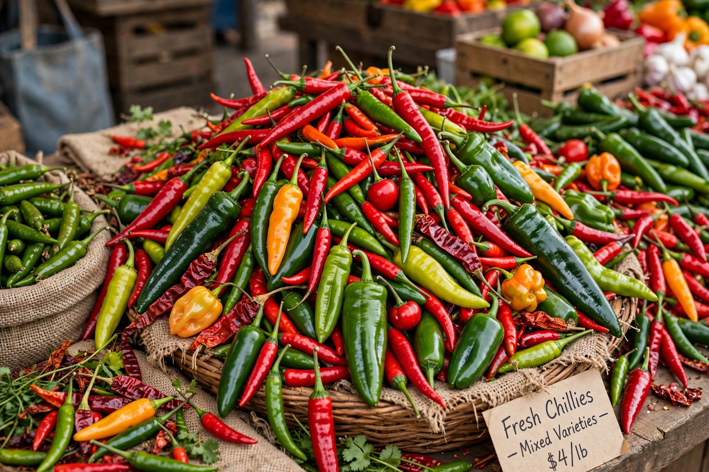

Chili pepper
From Wikipedia, the free encyclopedia

Chili peppers are the pungent fruits of plants of the genus Capsicum, domesticated in the Americas and spread worldwide after 1492. Their heat comes from capsaicin and related compounds, measured in Scoville Heat Units (SHU): a bell pepper scores 0, a jalapeño roughly 2,500–8,000, a habanero 100,000–350,000, and the hottest bred varieties (such as the Carolina Reaper and Pepper X) exceed 1.5–2.5 million. Few ingredients have transformed so many cuisines so fast: it is hard to imagine Thai, Sichuan, Indian or Korean food without them, yet all acquired chilies within the last 500 years.
History and spread
Chilies were domesticated in Mexico and South America thousands of years ago (archaeological evidence suggests by about 6000 BCE in some regions) and were a cornerstone of Aztec and Maya cooking. Columbus carried them to Europe seeking a substitute for black pepper — hence the misleading name "pepper" — and Portuguese traders spread them to India, Africa and Asia within decades, where they were adopted with enthusiasm and bred into countless local varieties.
Heat and capsaicin
Capsaicin binds pain receptors (TRPV1) that normally respond to heat, producing a burning sensation without tissue damage at culinary doses; mammals feel it, birds do not, which helps wild plants spread seed. The placental tissue (to which seeds attach) is hottest, not the seeds themselves. Dairy fats (casein) relieve the burn better than water. Repeated exposure builds tolerance, and many people enjoy the endorphin response to the pain.
Varieties and uses
The five domesticated species include C. annuum (jalapeños, cayenne, bell peppers, paprika peppers), C. chinense (habanero, Scotch bonnet, ghost pepper), C. frutescens (tabasco, piri piri) and C. baccatum (ají). Chilies are used fresh, dried (ancho, chipotle — smoke-dried jalapeño), ground (chili powder, paprika), fermented into sauces (Tabasco, sriracha) and pastes (Korean gochujang, North African harissa). Capsaicin also has medical uses in topical pain creams and in pepper-spray deterrents.